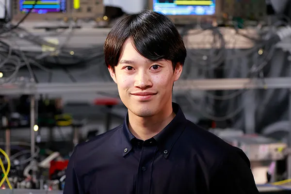

Shiro Tamiya
田宮 志郎
Quantum Information Scientist
Theory Group, NanoQT
Theory Group, NanoQT
誤り耐性量子計算 (FTQC) と量子誤り訂正 (QEC) を中心に、
量子計算・量子情報理論の研究に取り組んでいます。
I am a researcher in the field of quantum computation and quantum information theory. My current work primarily focuses on Fault-Tolerant Quantum Computing (FTQC) and Quantum Error Correction (QEC).
News
Updates
-
2025.12Invited talk at QEC Theory Workshop for Young Researchers名古屋大学にて開催される 「量子誤り訂正理論 若手ワークショップ (Quantum Error Correction Theory Workshop for Young Researchers)」 で講演を行う予定です。
-
2025.11Published in Nature Physics“Fault-tolerant quantum computation with polylogarithmic time and constant space overheads” が Nature Physics から出版されました。
-
2025.10New preprint on decoding of quantum LDPC codes“Degeneracy Cutting: A Local and Efficient Post-Processing for Belief Propagation Decoding of Quantum LDPC Codes” を arXiv にアップロードしました。
-
2025.09
Biography
Experience & Education
Experience
- 2024.04 – Present Research Scientist Nanofiber Quantum Technologies (NanoQT), Theory Group
- 2024.05 – Present Visiting Researcher The University of Tokyo
- 2022.04 – 2024.03 JSPS Research Fellow (DC2) Japan Society for the Promotion of Science
Education
- 2021.04 – 2024.03 Ph.D. in Physics The University of Tokyo (Supervisor: Prof. Masato Koashi)
- 2019.04 – 2021.03 M.S. in Physics The University of Tokyo (Supervisor: Prof. Masato Koashi)
- 2015.04 – 2019.03 B.S. in Physics Yokohama National University
Research
Focus Areas
Fault-tolerant quantum computation
ノイズに堅牢な量子計算を実現する誤り耐性量子計算の理論構築
Quantum error-correcting codes
高性能な量子誤り訂正符号の設計と解析
Quantum algorithms & optimization
量子アルゴリズムの設計と最適化手法の開発
Publications
Journal Articles & Preprints
-
Fault-tolerant quantum computation with polylogarithmic time and constant space overheads
-
Degeneracy Cutting: A Local and Efficient Post-Processing for Belief Propagation Decoding of Quantum Low-Density Parity-Check Codes
-
Concatenate codes, save qubits
-
Scalable Networking of Neutral-Atom Qubits: Nanofiber-Based Approach for Multiprocessor Fault-Tolerant Quantum Computer
-
Low-depth random Clifford circuits for quantum coding against Pauli noise using a tensor-network decoder
-
Stochastic gradient line Bayesian optimization for efficient noise-robust optimization of parameterized quantum circuits
-
Calculating nonadiabatic couplings and Berry's phase by variational quantum eigensolvers
-
Qulacs: a fast and versatile quantum circuit simulator for research purpose
-
Quantum circuits for exact unitary t-designs and applications to higher-order randomized benchmarking
Talks
Invited & Conference Presentations
International conferences & workshops
-
2025 Fault-tolerant quantum computation with polylogarithmic time and constant space overheads
-
2025 Polylog-time- and constant-space-overhead fault-tolerant quantum computation with quantum low-density parity-check codes
-
2025 Polylog-time- and constant-space-overhead fault-tolerant quantum computation with quantum low-density parity-check codes
-
2024 Polylog-time- and constant-space-overhead fault-tolerant quantum computation with quantum low-density parity-check codes
-
2023 Quantum coding with random Clifford circuits
-
2022 Stochastic Gradient Line Bayesian Optimization: Efficient Noise-Robust Optimization for Parameterized Quantum Circuits
-
2022 Stochastic Gradient Line Bayesian Optimization: Reducing Measurement Shots in Optimizing Parameterized Quantum Circuits
-
2022 Stochastic Gradient Line Bayesian Optimization: Reducing Measurement Shots in Variational Quantum Algorithms
-
2021 Stochastic Gradient Line Bayesian Optimization: Reducing Measurement Shots in Variational Quantum Algorithms
-
2021 Explicit constructions of exact unitary t-designs and applications to higher-order randomized benchmarking
-
2021 Explicit constructions of exact unitary t-designs and applications to higher-order randomized benchmarking (contributed talk)
-
2021 Calculating nonadiabatic couplings by variational quantum eigensolvers
-
2020 Variational quantum algorithms for calculating nonadiabatic couplings
Seminars
-
2025 Polylog-time- and constant-space-overhead fault-tolerant quantum computation with quantum low-density parity-check codes
-
2025 Polylog-time- and constant-space-overhead fault-tolerant quantum computation with quantum low-density parity-check codes
-
2025 Concatenate codes, save qubits
-
2024 Concatenate codes, save qubits
-
2024 低オーバーヘッド誤り耐性量子計算
-
2024 量子 LDPC 符号と量子計算への応用
-
2024 Low-overhead fault-tolerant quantum computation
Domestic conferences
-
2023 測定誘起相転移の体積則相におけるランダム量子回路の誤り訂正能力
-
2023 ゼロ磁場ダイヤモンド NV 中心における弱結合核スピン検出・操作手法の研究
-
2021 Decoupling approach に基づく低深度量子ランダム符号の性能評価
-
2021 確率的勾配方向ベイズ最適化による変分量子アルゴリズムに必要な測定回数の削減
-
2021 確率的勾配方向ベイズ最適化に基づく変分量子アルゴリズムの測定回数の削減
-
2020 NISQ 上での非断熱結合計算
-
2019 ダイヤモンド NV 中心による量子情報デバイスの実現に向けたハミルトニアンラーニング
-
2019 機械学習によるダイヤモンド NV 中心ハミルトニアン推定
Contact
Affiliation
Research Scientist, Theory Group,
Nanofiber Quantum Technologies (NanoQT)
Visiting Researcher, The University of Tokyo